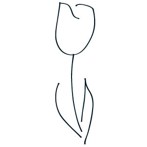

Un golpecito en el cristal, como si hubieran tirado algo. Luego, un caer ligero y amplio como de granos de arena lanzados desde una ventana de arriba. Y después, ese caer que se extiende, toma reglas, adopta un ritmo y se hace fluído, sonoro, musical, incontable, universal: llueve.